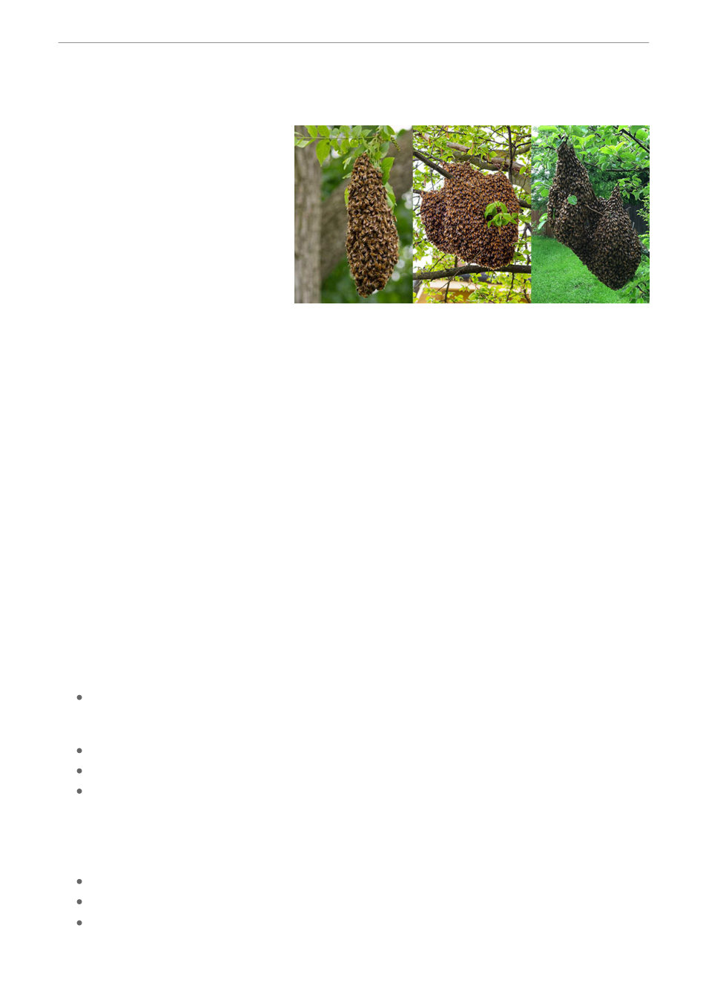

Next month (October) in the hive
(by Gary Montgomery)
Swarm collection
(by Gary Montgomery)
Whilst there are some basic
procedures to follow in collecting
swarms, every swarm situation can be
different. If approached to deal with a
swarm, ask a few key questions to
clarify what you may be dealing with.
This can save you time and potential
trouble!
ASK: Where precisely is the swarm located?
On a tree branch? On the wall of a premises? How high up? Is it accessible from the ground?
If in the wall of a premises, or roof space, it may be better left alone, or you may face accusations of
having caused “damage” to the premises!
Swarms over 2 meters off the ground presents issues of safety when attempting to juggle a box,
bee brush, secateurs and smoker when balanced on a ladder and are better left untouched.
Size of the swarm. The larger the swarm size the more likely it is to be a primary swarm, meaning it
will have the “old” queen from the hive. A smaller, secondary swarm is more likely to contain a
“virgin” queen and provide a better long term benefit. For a person unfamiliar with bee swarms, size
can be roughly explained in terms of a tennis ball, softball, football or basketball size.
How long has the swarm been in its current location? This is valuable for assessing how long the
swarm may continue to stay in that location. After initially settling, a swarm will rest whilst scout bees
search for a suitable long term location. Bees in a swarm will carry sufficient honey supplies to last
three days, so will need to re-establish elsewhere within that time.
Objective in swarm collection. The prime aim is to capture the queen bee. This will result in all other
bees in the swarm being retained, enabling the establishment of a new hive.
Have on hand:
An empty hive box. If possible provide four frames with foundation and four drawn out frames
of comb, or any combination thereof for an eight frame box. If no hive is available an empty
cardboard or polystyrene box of an appropriate size will do
Bee brush
Secateurs
Smoker
When to collect the swarm. As soon as possible, before the scout bees find a more suitable option!
How to collect the swarm. If the bees are in an accessible place, remove four frames from the hive /
box and place it underneath the swarm.
If located on a tree branch, hold branch firmly in one hand to prevent swarm falling.
Carefully cut branch with secateurs and gently lower swarm into hive.
Bees should move off branch onto the foundation / drawn comb within 2 /3 minutes. If not,
gently shake branch over hive and remove.